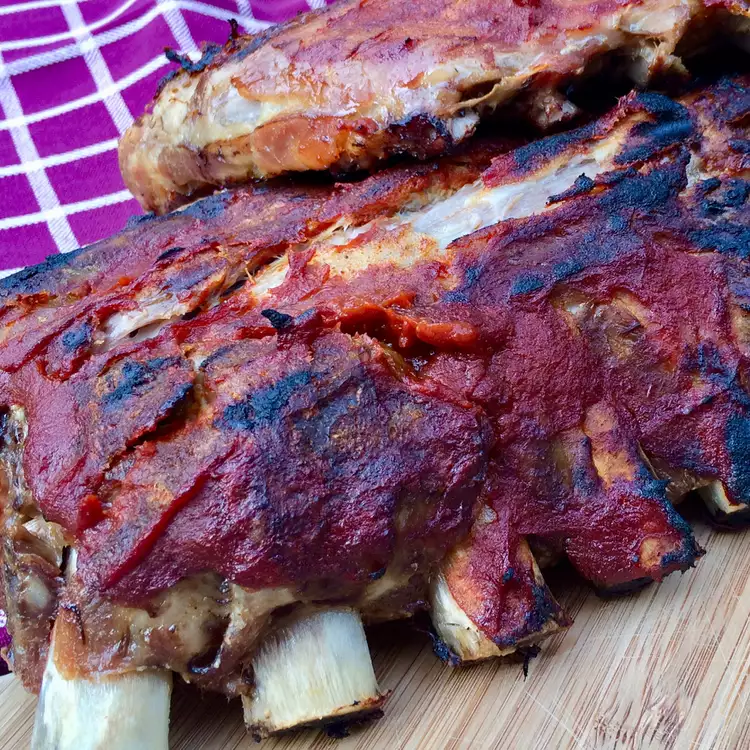

Home
Keto BBQ Ribs

Description
Going keto? Don't sacrifice flavor. You can enjoy these keto BBQ ribs with as much flavor as you like. If you prefer a spicy version, simply add about one teaspoon of cayenne pepper to the rub. This version is mild enough for anyone.
Ingredients
- 2 tablespoons kosher salt
- 1 teaspoon smoked paprika
- 1/2 teaspoon onion powder
- 1/2 teaspoon garlic powder
- 1/2 teaspoon ground ginger
- 1/4 teaspoon ground black pepper
- heavy-duty aluminum foil
- 6 pounds pork ribs
- 2 cups wood chips
- water
- vegetable oil
- 1 cup keto barbecue sauce, or more as needed
Steps
- Combine kosher salt, paprika, onion powder, garlic powder, ginger, and black pepper in a small bowl.
- Place one layer aluminum foil on a baking sheet, leaving about a 2-inch overhang on all sides.
- Pat ribs dry using a paper towel; rub spice mixture into both sides rib racks. Place racks, meaty-sides up, on the prepared baking sheet. Cover with one layer aluminum foil; tightly crimp the edges. Refrigerate 8 to 24 hours.
- Preheat the oven to 225 degrees F (110 degrees C). Place rack in center of oven.
- Place covered baking sheet on center rack; bake in the preheated oven for 4 hours. Remove ribs from oven; rest for 10 minutes.
- Preheat an outdoor grill for medium heat. Place wood chips in a bowl; cover with water.
- Drain wood chips. Place in an aluminum foil packet; poke several holes in packet. Place packet on the hottest part of the grill; close the lid. When chips are smoking, oil the grate where rib racks will be placed.
- Remove ribs from foil; place racks on the oiled grate. Brush with 1/2 cup barbecue sauce. Close the lid; grill for 5 to 10 minutes, monitoring closely for flare-ups. Flip ribs; baste other side with remaining 1/2 cup barbecue sauce. Close the lid; grill for 5 to 10 minutes, monitoring for flare-ups.
- Continue flipping and basting until ribs reach your desired color. Slice racks into portions; serve with additional barbecue sauce.
Tips:
After cooking the ribs in the oven, you can refrigerate them and finish smoking them the next day.
Source: allrecipes